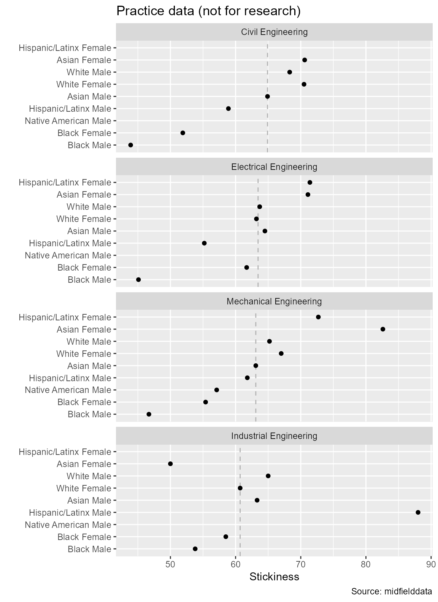
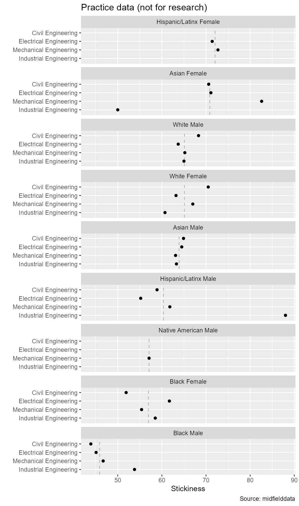

We take some time in this early tutorial to create some graphs because, as Wickham and Grolemund state (2017),
Visualization is a great place to start with R programming, because the payoff is so clear; you get to make elegant and informative plots that help you understand the data.
In particular, we introduce graphs of multiway data in which there is is one quantitative variable and two categorical variables. As explained by Cleveland (1993),
… the quantitative variable is a response, and the goal is to study how it depends on the categorical variables, which are factors. What distinguishes multiway data is the cross-classification of the categorical variables; there is a value of the response for each combination of levels of the two categorical variables.
The structure of multiway data is specific: a categorical variable with \(m\) levels; an independent categorical variable with \(n\) levels; and a single quantitative value associated with every combinations of levels of the two categories. Multiway data are typically organized as three columns with \(m \times n\) rows.
Note that “multiway” in our context refers to the data structure and graph design defined by Cleveland, not to the methods of analysis described by Kroonenberg (2008).
study_stickiness)midfieldr functions
packages
# packages used
library("midfieldr")
library("data.table")
library("ggplot2")We can control how a data.table is printed to the screen with the following options.
# optional code to control data.table printing
options(datatable.print.nrows = 10,
datatable.print.topn = 5,
datatable.print.class = TRUE)Longitudinal “stickiness” is the ratio of the number of students graduating in a program to the number of students ever enrolled in that program (Ohland et al., 2012). The stickiness metric is developed in a separate vignette—here we focus on graphing a result.
We computed stickiness for a case study in Civil, Electrical, Industrial, and Mechanical Engineering and saved the results as the data set, study_stickiness. You may view its help page by running
? study_stickinessThe data is loaded with midfieldr (we don’t have to use data() to access it.)
# examine the built-in data
study_stickiness
#> program race_sex stick
#> <char> <char> <num>
#> 1: Civil Engineering Asian Female 0.45
#> 2: Civil Engineering Black Female 0.35
#> 3: Civil Engineering White Female 0.46
#> 4: Civil Engineering Asian Male 0.48
#> 5: Civil Engineering Black Male 0.36
#> ---
#> 27: Mechanical Engineering Asian Male 0.57
#> 28: Mechanical Engineering Black Male 0.35
#> 29: Mechanical Engineering Hispanic/Latinx Male 0.43
#> 30: Mechanical Engineering Native American Male 0.29
#> 31: Mechanical Engineering White Male 0.46Categorical variables are often provided as character variables. Without ordering the levels, the rows and panels of the multiway graph are ordered alphabetically—not the best design for gaining insights from the graph.
To condition the categorical variables, we use condition_multiway() to convert them to factors with levels ordered by the median response values. To see its help page, run
? condition_multiway()
# create a new memory location
DT <- copy(study_stickiness)The quantitative variable is stick (stickiness); the first categorical variable is program; the second categorical variable is race/ethnicity/sex. Before conditioning, the categorical variables are characters,
# first category is a character
class(DT$program)
#> [1] "character"
# second category is a character
class(DT$race_sex)
#> [1] "character"We process the data frame
# condition as multiway data
DT <- condition_multiway(DT)No change to the row and column structure, but as you can see, the previous character variables have been converted to factors,
DT
#> program race_sex stick
#> <fctr> <fctr> <num>
#> 1: Civil Engineering Asian Female 0.45
#> 2: Civil Engineering Black Female 0.35
#> 3: Civil Engineering White Female 0.46
#> 4: Civil Engineering Asian Male 0.48
#> 5: Civil Engineering Black Male 0.36
#> ---
#> 27: Mechanical Engineering Asian Male 0.57
#> 28: Mechanical Engineering Black Male 0.35
#> 29: Mechanical Engineering Hispanic/Latinx Male 0.43
#> 30: Mechanical Engineering Native American Male 0.29
#> 31: Mechanical Engineering White Male 0.46The levels of the factors are ordered non-alphabetically. program is now a factor with 4 levels; race_sex is a factor with 9 levels.
# first category is now a factor
levels(DT$program)
#> [1] "Electrical Engineering" "Mechanical Engineering" "Civil Engineering"
#> [4] "Industrial Engineering"
# second category is now a factor
levels(DT$race_sex)
#> [1] "Native American Male" "Black Male" "Black Female"
#> [4] "Hispanic/Latinx Female" "White Female" "Hispanic/Latinx Male"
#> [7] "Asian Female" "White Male" "Asian Male"We would expect 4 \(\times\) 9 = 36 observations. However, some rows are omitted to preserve confidentiality, leaving us with 31 observations.
The median values that determine the order of the levels can be obtained by using the details argument.
# return median stickiness by category
DT_med <- condition_multiway(DT, details = TRUE)By ordering the data by program, you can see that a given program has a single value of med_program copied as many times as needed.
# optional code to control data.table printing
options(datatable.print.topn = 10)
# programs have a median stickiness across race-sex groups
DT_med[order(program)]
#> program race_sex med_program med_race_sex
#> <fctr> <fctr> <num> <num>
#> 1: Electrical Engineering Asian Female 0.425 0.470
#> 2: Electrical Engineering Black Female 0.425 0.385
#> 3: Electrical Engineering Hispanic/Latinx Female 0.425 0.425
#> 4: Electrical Engineering White Female 0.425 0.430
#> 5: Electrical Engineering Asian Male 0.425 0.540
#> 6: Electrical Engineering Black Male 0.425 0.365
#> 7: Electrical Engineering Hispanic/Latinx Male 0.425 0.440
#> 8: Electrical Engineering White Male 0.425 0.480
#> 9: Mechanical Engineering Asian Female 0.430 0.470
#> 10: Mechanical Engineering Black Female 0.430 0.385
#> ---
#> 22: Civil Engineering Black Male 0.450 0.365
#> 23: Civil Engineering Hispanic/Latinx Male 0.450 0.440
#> 24: Civil Engineering White Male 0.450 0.480
#> 25: Industrial Engineering Asian Female 0.560 0.470
#> 26: Industrial Engineering Black Female 0.560 0.385
#> 27: Industrial Engineering White Female 0.560 0.430
#> 28: Industrial Engineering Asian Male 0.560 0.540
#> 29: Industrial Engineering Black Male 0.560 0.365
#> 30: Industrial Engineering Hispanic/Latinx Male 0.560 0.440
#> 31: Industrial Engineering White Male 0.560 0.480
#> stick
#> <num>
#> 1: 0.46
#> 2: 0.42
#> 3: 0.40
#> 4: 0.34
#> 5: 0.51
#> 6: 0.37
#> 7: 0.43
#> 8: 0.43
#> 9: 0.61
#> 10: 0.33
#> ---
#> 22: 0.36
#> 23: 0.45
#> 24: 0.50
#> 25: 0.48
#> 26: 0.51
#> 27: 0.58
#> 28: 0.65
#> 29: 0.45
#> 30: 0.68
#> 31: 0.56Similarly, by ordering the data by race_sex, you can see that a given demographic group has a single value of med_race_sex copied as many times as needed.
# race_sex groupings have a median stickiness across programs
DT_med[order(race_sex)]
#> program race_sex med_program med_race_sex
#> <fctr> <fctr> <num> <num>
#> 1: Mechanical Engineering Native American Male 0.430 0.290
#> 2: Civil Engineering Black Male 0.450 0.365
#> 3: Electrical Engineering Black Male 0.425 0.365
#> 4: Industrial Engineering Black Male 0.560 0.365
#> 5: Mechanical Engineering Black Male 0.430 0.365
#> 6: Civil Engineering Black Female 0.450 0.385
#> 7: Electrical Engineering Black Female 0.425 0.385
#> 8: Industrial Engineering Black Female 0.560 0.385
#> 9: Mechanical Engineering Black Female 0.430 0.385
#> 10: Electrical Engineering Hispanic/Latinx Female 0.425 0.425
#> ---
#> 22: Industrial Engineering Asian Female 0.560 0.470
#> 23: Mechanical Engineering Asian Female 0.430 0.470
#> 24: Civil Engineering White Male 0.450 0.480
#> 25: Electrical Engineering White Male 0.425 0.480
#> 26: Industrial Engineering White Male 0.560 0.480
#> 27: Mechanical Engineering White Male 0.430 0.480
#> 28: Civil Engineering Asian Male 0.450 0.540
#> 29: Electrical Engineering Asian Male 0.425 0.540
#> 30: Industrial Engineering Asian Male 0.560 0.540
#> 31: Mechanical Engineering Asian Male 0.430 0.540
#> stick
#> <num>
#> 1: 0.29
#> 2: 0.36
#> 3: 0.37
#> 4: 0.45
#> 5: 0.35
#> 6: 0.35
#> 7: 0.42
#> 8: 0.51
#> 9: 0.33
#> 10: 0.40
#> ---
#> 22: 0.48
#> 23: 0.61
#> 24: 0.50
#> 25: 0.43
#> 26: 0.56
#> 27: 0.46
#> 28: 0.48
#> 29: 0.51
#> 30: 0.65
#> 31: 0.57We use conventional ggplot2 functions to create the multiway graphs.
By previously ordering the levels of the factors, we have structured the data so that the rows and panels of the multiway graph are ordered by the appropriate medians. The panel medians are drawn as vertical dashed lines.
Reminder: These are practice data, not suitable for drawing inferences about student performance, i.e., not for research.
# create one multiway graph
ggplot(data = DT_med, aes(x = stick, y = race_sex)) +
facet_wrap(vars(program), ncol = 1, as.table = FALSE) +
geom_vline(aes(xintercept = med_program),
linetype = 2,
color = "gray70") +
geom_point(na.rm = TRUE) +
labs(x = "Stickiness",
y = "",
title = "Practice data (not for research)",
caption = "Source: midfielddata")
This graph permits a direct visual comparison of how stickiness varies by race and sex within a particular major.
Reading a multiway graph
The previous graph does not facilitate visual comparisons of members of the same race-sex group. As Cleveland says,
Because of this asymmetry, it is often important to explore multiway data by as many multiway dot plots as there are categorical variables, with each variable assigned once to the levels.
To create the dual multiway graph, we swap the roles of the rows and panels.
y = race_sex becomes y = program
facet_wrap(vars(program) ... becomes facet_wrap(vars(race_sex) ...
# create the dual multiway graph
ggplot(data = DT_med, aes(x = stick, y = program)) +
facet_wrap(vars(race_sex), ncol = 1, as.table = FALSE) +
geom_vline(aes(xintercept = med_race_sex),
linetype = 2,
color = "gray70") +
geom_point(na.rm = TRUE) +
labs(x = "Stickiness",
y = "",
title = "Practice data (not for research)",
caption = "Source: midfielddata")
This graph permits a direct visual comparison of how stickiness varies by major for one group of students.
Both multiways should be created for discussion. Usually one or the other will convey a more compelling visual story that gets included in the published findings.
Using the built-in data study_grad_rate,
Data tables are useful in discussions with one’s research team and are often included in publications for readers who want to see the values underlying the data graphics.
Our example data are currently laid out in “block record” form (Mount and Zumel, 2019), where the race_sex key and the program key are both in columns and the response, stickiness, is in the last column. This layout is also called “tidy data” (Wickham and Grolemund, 2017).
The graphing package we use, ggplot2, is designed to work most effectively with block-record data, thus the block-record (“long”) form is the default layout in midfieldr.
| program | race_sex | stick | med_program | med_race_sex |
|---|---|---|---|---|
| Civil Engineering | Asian Female | 0.45 | 0.450 | 0.470 |
| Civil Engineering | Black Female | 0.35 | 0.450 | 0.385 |
| Civil Engineering | White Female | 0.46 | 0.450 | 0.430 |
| Civil Engineering | Asian Male | 0.48 | 0.450 | 0.540 |
| Civil Engineering | Black Male | 0.36 | 0.450 | 0.365 |
| Civil Engineering | Hispanic/Latinx Male | 0.45 | 0.450 | 0.440 |
| Civil Engineering | White Male | 0.50 | 0.450 | 0.480 |
| Electrical Engineering | Asian Female | 0.46 | 0.425 | 0.470 |
| Electrical Engineering | Black Female | 0.42 | 0.425 | 0.385 |
| Electrical Engineering | Hispanic/Latinx Female | 0.40 | 0.425 | 0.425 |
| Electrical Engineering | White Female | 0.34 | 0.425 | 0.430 |
| Electrical Engineering | Asian Male | 0.51 | 0.425 | 0.540 |
| Electrical Engineering | Black Male | 0.37 | 0.425 | 0.365 |
| Electrical Engineering | Hispanic/Latinx Male | 0.43 | 0.425 | 0.440 |
| Electrical Engineering | White Male | 0.43 | 0.425 | 0.480 |
| Industrial Engineering | Asian Female | 0.48 | 0.560 | 0.470 |
| Industrial Engineering | Black Female | 0.51 | 0.560 | 0.385 |
| Industrial Engineering | White Female | 0.58 | 0.560 | 0.430 |
| Industrial Engineering | Asian Male | 0.65 | 0.560 | 0.540 |
| Industrial Engineering | Black Male | 0.45 | 0.560 | 0.365 |
| Industrial Engineering | Hispanic/Latinx Male | 0.68 | 0.560 | 0.440 |
| Industrial Engineering | White Male | 0.56 | 0.560 | 0.480 |
| Mechanical Engineering | Asian Female | 0.61 | 0.430 | 0.470 |
| Mechanical Engineering | Black Female | 0.33 | 0.430 | 0.385 |
| Mechanical Engineering | Hispanic/Latinx Female | 0.45 | 0.430 | 0.425 |
| Mechanical Engineering | White Female | 0.40 | 0.430 | 0.430 |
| Mechanical Engineering | Asian Male | 0.57 | 0.430 | 0.540 |
| Mechanical Engineering | Black Male | 0.35 | 0.430 | 0.365 |
| Mechanical Engineering | Hispanic/Latinx Male | 0.43 | 0.430 | 0.440 |
| Mechanical Engineering | Native American Male | 0.29 | 0.430 | 0.290 |
| Mechanical Engineering | White Male | 0.46 | 0.430 | 0.480 |
However, the visual convention preferred by publishers and readers is a row-record (“wide”) form, as illustrated by Table 2. The race_sex key is in the left column and the program key is in the column names. The stickiness findings lie at the row-column intersections. Note that in this form, the four NA observations we mentioned earlier are explicitly shown.
| Race/ethnicity/sex | Civil | Electrical | Industrial | Mechanical |
|---|---|---|---|---|
| Asian Female | 0.45 | 0.46 | 0.48 | 0.61 |
| Asian Male | 0.48 | 0.51 | 0.65 | 0.57 |
| Black Female | 0.35 | 0.42 | 0.51 | 0.33 |
| Black Male | 0.36 | 0.37 | 0.45 | 0.35 |
| Hispanic/Latinx Female | NA | 0.40 | NA | 0.45 |
| Hispanic/Latinx Male | 0.45 | 0.43 | 0.68 | 0.43 |
| Native American Male | NA | NA | NA | 0.29 |
| White Female | 0.46 | 0.34 | 0.58 | 0.40 |
| White Male | 0.50 | 0.43 | 0.56 | 0.46 |
Depending on your software background, you may have encountered a block-record/row-record transformation using any of these function pairs—a list adapted from (Mount and Zumel, 2019).
In our example, we use dcast() from the data.table package to reshape the data for publication. We start by limiting the significant figures of floating-point numbers.
# create a new memory location
block_form <- copy(DT)
# limit significant digits
block_form[, stick := round(stick, 2)]If in the final result we want rows and columns ordered alphabetically, we convert factors to characters.
# create a new memory location
row_form <- copy(block_form)
# convert factors to characters
row_form[, race_sex := as.character(race_sex)]
row_form[, program := as.character(program)]dcast() is used to reshape the data frame from block-record form to row-record form.
# reshape
row_form <- dcast(row_form, race_sex ~ program, value.var = "stick")
# examine the result
row_form
#> race_sex Civil Engineering Electrical Engineering
#> <char> <num> <num>
#> 1: Asian Female 0.45 0.46
#> 2: Asian Male 0.48 0.51
#> 3: Black Female 0.35 0.42
#> 4: Black Male 0.36 0.37
#> 5: Hispanic/Latinx Female NA 0.40
#> 6: Hispanic/Latinx Male 0.45 0.43
#> 7: Native American Male NA NA
#> 8: White Female 0.46 0.34
#> 9: White Male 0.50 0.43
#> Industrial Engineering Mechanical Engineering
#> <num> <num>
#> 1: 0.48 0.61
#> 2: 0.65 0.57
#> 3: 0.51 0.33
#> 4: 0.45 0.35
#> 5: NA 0.45
#> 6: 0.68 0.43
#> 7: NA 0.29
#> 8: 0.58 0.40
#> 9: 0.56 0.46For publication, we edit the new column names.
# edit column names
setnames(row_form,
old = c("race_sex",
"Civil Engineering",
"Electrical Engineering",
"Industrial Engineering",
"Mechanical Engineering"),
new = c("Race/ethnicity/sex",
"Civil",
"Electrical",
"Industrial",
"Mechanical"))
# examine the result
row_form
#> Race/ethnicity/sex Civil Electrical Industrial Mechanical
#> <char> <num> <num> <num> <num>
#> 1: Asian Female 0.45 0.46 0.48 0.61
#> 2: Asian Male 0.48 0.51 0.65 0.57
#> 3: Black Female 0.35 0.42 0.51 0.33
#> 4: Black Male 0.36 0.37 0.45 0.35
#> 5: Hispanic/Latinx Female NA 0.40 NA 0.45
#> 6: Hispanic/Latinx Male 0.45 0.43 0.68 0.43
#> 7: Native American Male NA NA NA 0.29
#> 8: White Female 0.46 0.34 0.58 0.40
#> 9: White Male 0.50 0.43 0.56 0.46This result is the source for Table 2, repeated below.
| Race/ethnicity/sex | Civil | Electrical | Industrial | Mechanical |
|---|---|---|---|---|
| Asian Female | 0.45 | 0.46 | 0.48 | 0.61 |
| Asian Male | 0.48 | 0.51 | 0.65 | 0.57 |
| Black Female | 0.35 | 0.42 | 0.51 | 0.33 |
| Black Male | 0.36 | 0.37 | 0.45 | 0.35 |
| Hispanic/Latinx Female | NA | 0.40 | NA | 0.45 |
| Hispanic/Latinx Male | 0.45 | 0.43 | 0.68 | 0.43 |
| Native American Male | NA | NA | NA | 0.29 |
| White Female | 0.46 | 0.34 | 0.58 | 0.40 |
| White Male | 0.50 | 0.43 | 0.56 | 0.46 |
Other good tools for reshaping are provided in packages such as reshape() in base R, cdata (Mount and Zumel, 2020), and tidyr (Wickham and Henry, 2020).
Using the built-in data study_grad_rate,
The vignette code chunks are collected below in a single, condensed script.
# packages used
library("midfieldr")
library("data.table")
library("ggplot2")
# optional code to control data.table printing
options(datatable.print.nrows = 10,
datatable.print.topn = 5,
datatable.print.class = TRUE)
# data preparation
DT <- copy(study_stickiness)
class(DT$program)
class(DT$race_sex)
DT <- condition_multiway(DT)
levels(DT$program)
levels(DT$race_sex)
DT_med <- condition_multiway(DT, details = TRUE)
DT_med[order(program)]
DT_med[order(race_sex)]
# creating a multiway graph
ggplot(data = DT_med, aes(x = stick, y = race_sex)) +
facet_wrap(vars(program), ncol = 1, as.table = FALSE) +
geom_vline(aes(xintercept = med_program),
linetype = 2) +
geom_point(na.rm = TRUE) +
labs(x = "Stickiness",
y = "",
title = "Practice data (not for research)",
caption = "Source: midfielddata")
# creating the dual multiway graph
ggplot(data = DT_med, aes(x = stick, y = program)) +
facet_wrap(vars(race_sex), ncol = 1, as.table = FALSE) +
geom_vline(aes(xintercept = med_race_sex),
linetype = 2) +
geom_point(na.rm = TRUE) +
labs(x = "Stickiness",
y = "",
title = "Practice data (not for research)",
caption = "Source: midfielddata")
# creating a table for publication
block_form <- copy(DT)
block_form[, stick := round(stick, 2)]
row_form <- copy(block_form)
row_form[, race_sex := as.character(race_sex)]
row_form[, program := as.character(program)]
row_form <- dcast(row_form, race_sex ~ program, value.var = "stick")
setnames(row_form,
old = c("race_sex",
"Civil Engineering",
"Electrical Engineering",
"Industrial Engineering",
"Mechanical Engineering"),
new = c("Race/ethnicity/sex",
"Civil",
"Electrical",
"Industrial",
"Mechanical"))